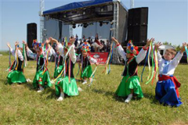
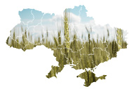

Стартувала перша Агрошкола!21 Jun 2011 | COMMENTS (0)

17 молодих спеціалістів зроблять перший крок до МВА в агрономії! Агрохолдинг «Мрія» започатковує піврічну Агрошколу – фактично міні-університет. В ньому навчатимуться випускники агровузів та молоді спеціалісти, які вже 2-3 роки попрацювали в агросфері. Стартувала перша Агрошкола!21 Jun 2011 | COMMENTS (0)
17 молодих спеціалістів зроблять перший крок до МВА в агрономії! Агрохолдинг «Мрія» започатковує піврічну Агрошколу – фактично міні-університет. В ньому навчатимуться випускники агровузів та молоді спеціалісти, які вже 2-3 роки попрацювали в агросфері. Стартувала перша Агрошкола!21 Jun 2011 | COMMENTS (0)
17 молодих спеціалістів зроблять перший крок до МВА в агрономії! Агрохолдинг «Мрія» започатковує піврічну Агрошколу – фактично міні-університет. В ньому навчатимуться випускники агровузів та молоді спеціалісти, які вже 2-3 роки попрацювали в агросфері. Стартувала перша Агрошкола!21 Jun 2011 | COMMENTS (0)
17 молодих спеціалістів зроблять перший крок до МВА в агрономії! Агрохолдинг «Мрія» започатковує піврічну Агрошколу – фактично міні-університет. В ньому навчатимуться випускники агровузів та молоді спеціалісти, які вже 2-3 роки попрацювали в агросфері. Стартувала перша Агрошкола!21 Jun 2011 | COMMENTS (0)
17 молодих спеціалістів зроблять перший крок до МВА в агрономії! Агрохолдинг «Мрія» започатковує піврічну Агрошколу – фактично міні-університет. В ньому навчатимуться випускники агровузів та молоді спеціалісти, які вже 2-3 роки попрацювали в агросфері. Стартувала перша Агрошкола!21 Jun 2011 | COMMENTS (0)
17 молодих спеціалістів зроблять перший крок до МВА в агрономії! Агрохолдинг «Мрія» започатковує піврічну Агрошколу – фактично міні-університет. В ньому навчатимуться випускники агровузів та молоді спеціалісти, які вже 2-3 роки попрацювали в агросфері. Цей день в календарі «Мрії»
|
Організаційні оголошення9.07.2011 7.07.2011 7.07.2011 СвяткуємоCпілкування
Вітаємо в компаніїНове в бібліотеці |
Панель швидкого доступуФото тижняКарта Мрії
|